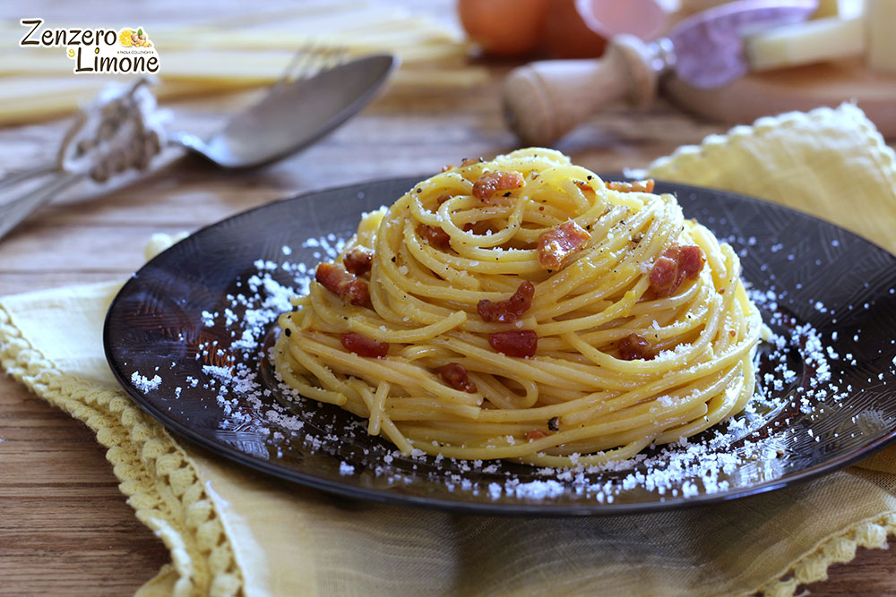

Pasta alla Carbonara

Description:
Pasta alla Carbonara is a classic Italian dish made with a rich and creamy sauce consisting of eggs, Parmesan or Pecorino cheese, pancetta or guanciale, and black pepper.
Traditionally served with spaghetti, this dish is known for its savory, velvety sauce that’s achieved without any cream, relying solely on eggs and cheese for its creamy consistency.
This comforting pasta is quick and easy to make, perfect for a weeknight dinner or a special meal. Carbonara is simple yet indulgent, and you can add extra ingredients like peas or mushrooms for variety, but the classic version remains a favorite among pasta lovers.
Ingredients:
- 12 oz spaghetti (or your preferred pasta)
- 4 oz pancetta or guanciale, diced
- 2 large eggs
- 1 cup grated Parmesan cheese (or Pecorino Romano)
- Freshly ground black pepper, to taste
- Salt, for pasta water
- 1 tbsp olive oil
- Fresh parsley (optional, for garnish)
Steps for Cooking Pasta alla Carbonara:
- Cook the Pasta:
- Bring a large pot of salted water to a boil. Cook the spaghetti according to package instructions until al dente.
- Reserve about 1 cup of pasta water before draining the pasta.
- Prepare the Pancetta or Guanciale:
- While the pasta is cooking, heat the olive oil in a large skillet over medium heat.
- Add the diced pancetta or guanciale and cook until crispy and golden, about 5-7 minutes. Remove from heat.
- Make the Carbonara Sauce:
- In a medium bowl, whisk together the eggs, grated Parmesan or Pecorino cheese, and a generous amount of black pepper.
- Set aside until ready to combine with the pasta.
- Combine Pasta and Sauce:
- Once the pasta is cooked and drained, add it directly to the skillet with pancetta or guanciale, tossing to coat.
- Slowly pour the egg and cheese mixture over the hot pasta, tossing continuously to create a creamy sauce (do not scramble the eggs).
- If the sauce is too thick, gradually add a bit of the reserved pasta water until you reach your desired consistency.
- Serve and Enjoy:
- Top with additional black pepper and fresh parsley, if desired.
- Serve immediately while hot!